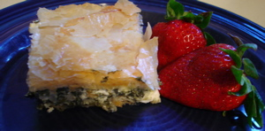

Mom cooks from Craig Claiborne
The New York Times Cookbook by Craig Claiborne was the first “gourmet” cookbook I ever owned, back in 1972 or so, a Christmas present from my Uncle Tony and Aunt Barbara Dutton, and for several years was only one of about 2 or 3 cookbooks in my kitchen, the others being the red and white plaid Better Homes and Gardens Cookbook, the 11th edition of the Fanny Farmer Cookbook, and a funny little tome entitled something like The Impoverished Students’ Book of Cookery, Drinkery, and Housekeepery. My mother gave me that one when I first went off to college and it was quite useful. I look at my bulging shelves of cookbooks today and think back to those times a bit wistfully—I certainly got my money’s worth out of those volumes.
I must have had the original 1960 edition of the NYTimes book; my husband gave me the revised version a few years back, but it still has most of the same recipes in it, with Craig’s comments and captions. As such it is a time capsule of an era when Americans were just starting to experiment with “foreign” cooking. Arroz con pollo, for instance, is helpfully defined for us as “chicken with rice”. I made a lot of the recipes out of this book; probably more than I have cooked from any other cookbook I have ever owned. Paging through it tonight I happened upon a lot of my old favorites, like the cream of curried pea soup, which is worth bookmarking if you like to serve soup as a first course. There’s an appetizer I used to make for parties called Mushrooms à la Grecque, beneath which Craig says, “The isles of Greece where burning Sappho loved and sung have contributed a splendid hors d’ouvre.” If that doesn’t convince you to try a recipe, I don’t know what would!
Craig calls this “Spinach-Feta Strudel”, but most of us know it as spanakopita these days. It still holds up as a very good rendition of this dish, but when I first made it back in 1973 or so it was a revelation, as I had never heard of spanakopita, or ever used filo dough before, or eaten or cooked anything like this. If you can put yourself in my shoes, or my mouth, or something, and imagine what that was like, it was thrilling, and this dish became a staple, and something I often brought to potlucks to amaze my friends and wow strangers.

note: The recipe calls for 2 pounds of fresh spinach, washed, chopped, cooked in oil, then drained. You can skip a lot of that by using 2 boxes of chopped frozen spinach, defrosted and squeezed in a strainer, then added to the onions.
Spinach-Feta Strudel
- 1 box filo dough
- 2 pounds fresh spinach (see note)
- 3 tablespoons olive oil
- 1 1/2 cups chopped onions
- 4 tablespoons butter
- 5 eggs, beaten
- 1 lb. feta cheese
- 1/2 cup chopped scallions, green part included
- 1/2 cup chopped fresh dill, or 1 tablespoon dried or to taste
- 1 teaspoon dried thyme
- 1/2 cup finely chopped fresh parsley
- salt and freshly ground fresh pepper
- 1/4-1/2 lb. melted butter
Remover filo dough from refrigerator at least 3 hours before using. Wash spinach thoroughly and chop. Cook in oil until wilted. Drain. Saute onions in butter. Or use frozen spinach as in note above, adding to sauteed onions in same pan.
Mix the onions, eggs, scallions, crumbled cheese, herbs, and parsley. Add the spinach and season with salt and pepper. Preheat oven to 350º. Cut filo dough in half, or to fit 9X13 inch pan, keeping half of dough covered with towel. Place one sheet of dough in pan and brush with melted butter. Repeat with 11 more sheets, brushing with butter after each addition. Spread the filling over the dough after you have placed 12 or 13 sheets in the pan, then repeat the process with 12 or 14 more sheets. You may need to melt a little more butter.
Bake 1 hour or until brown and very puffy. Let sit for 5 minutes and then cut into squares with a very sharp knife. Serve as an appetizer or main course.
Comments
I love it! I wish I could have a piece right now.
I especially enjoyed reading about your cookbook collection.
Ha! My first gourmet cookbook, too. My mum gave me a copy of this and The Joy when I had my first apartment at school—the NYTimes Cookbook was her favorite. I used it all the time. Mine literally fell apart some years ago. I should get a replacement.
Mum used to make this “strudel”- and also a cabbage strudel that I have been planning to reconstruct. Is that recipe in there too? My first big success from this book was Claiborne’s spaghetti with white clam sauce (made with canned clams), proudly presented to my housemates in 1972!
I felt sooo classy.
You know, Lindy, I remember that cabbage strudel recipe now that you mention it; it would have been on the same, or facing page, but they didn’t include it in the new addition :( They do have the roquefort cheese strudel from the old addition in here, though, and I always meant to try that since I love blue cheeses.
There was a romaine soup I used to make that they don’t have, either—the first time I ever cooked with lettuce. I remember it as being really simple and so good, just chicken stock, romaine, and heavy cream, maybe some minced onion.
That looks delicious! I have not had spanakopita for years and years and I’ve never made it myself but this looks so good I’m tempted to try it.
Craig is very respected here at the school, and we have all of his books in the library. He was also a good friend of Chef Pépin’s, who tells stories in his memoir of their lavish country feasts. I’ll have to take a look at some of his recipes.
Yes, mom, you do have a lot of cookbooks. I always think I want cookbooks, but then I never use them. Maybe someday when I have room for them (and room to have one open on the counter while I cook), I will change my ways.
I love this post- I love hearing about cookbook collections. My first 2 cookbooks that became my bibles were Betty Crocker and Silver Palate (2nd one). In my few years of cooking, they have both become quite worn.
I bought the Craig Claiborne NY Times cookbook at a yard sale for $1 upstate last summer and only got around to cooking from it just last week! I made his banana bread- and unfortunately was quite disappointed with it- he used oil instead of butter (I strayed from my Silver Palate recipe) and the bread tasted only of oil and the banana taste was masked. I won’t give up though! Perhaps I will try the cream of curried pea soup or spinach feta strudel. Thanks for giving me hope.
It’s funny you should comment on a baking recipe, Emily, because I was reading his baking chapter last night and noticed that an awful lot of the recipes called for shortening (!) when most of us would use butter. I know I made some of those cakes back in the 70’s and I wonder if I used all that shortening; I really can’t remember.
As for banana bread, have you tried the one in Mark Bittman’s How to Cook Everything book? It’s pretty much my standard, even though I don’t personally eat it, loathing bananas the way I do, but I, too, don’t much like oil in my baked goods. I think it gives them an unpleasant mouth-feel. That’s why I don’t like most carrot cakes; they’re almost always made with oil, and a lot of it.
Anytime you ladies feel like making banana bread, you should know that it’s one of my all-time favorite treats. Warm banana bread with peanut butter or cream cheese is heaven to me.
I used to pack Whitney peanut butter on banana bread sandwiches in her lunchbox all the time in elementary school!
I read a funny memoir/essay in the New Yorker a few months ago about cooking from Craig Claiborne’s book in the ‘60s and ’70s. I think the writer was Nora Ephron. For her, Claiborne’s recipes were partly a revelation, partly an exercise in humiliation.
I’ve never looked through the Times cookbook, but this spanakopita sounds good.
I also read that essay, and I sent it to you, mom. Do you remember? It’s very funny and interesting. I liked how she fantasized about cooking for her favorite cookbook writers.
I may try that. It does sound delicious, and I have a large crop of spinach coming up in my garden.
Thank-you SO much, this has just solved tonight’s supper dilemma of “what am I going to produce a meal out of with so little in the fridge!”
Hi, Kaity – Welcome to the blog! Although you hate to use frozen spinach at this time of year, a box of it in the freezer almost always gives you the basis of a quick meal. Spinach sauteed in olive oil with garlic tossed with pasta makes a very nice dinner, for example. I hate to go to the grocery store on Sundays; it’s always so crowded.
I’ve been searching for the NYT recipe for white clam sauce with the canned clams circa …1972? My mom made it and unbelievably good. Can anyone send me this recipe?
Add a comment